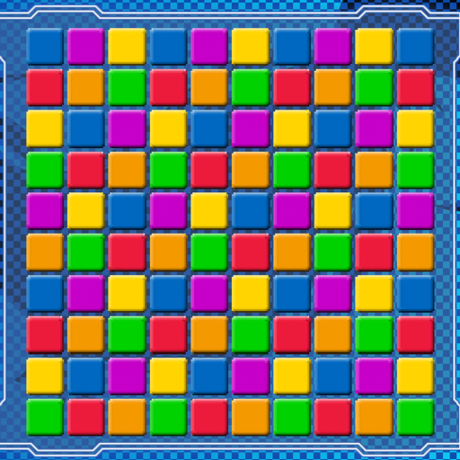
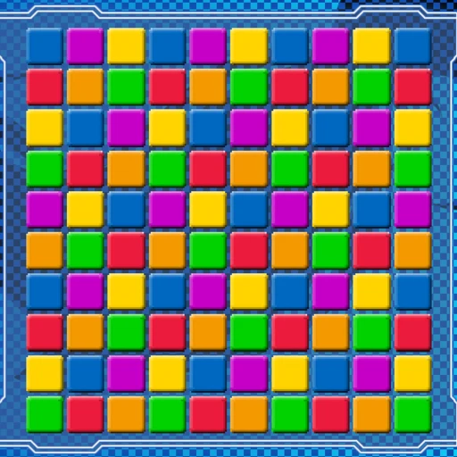

2022-10-24
いいかもしれない、WebP
たまには文章を書いてみようと思い立ったので書いてみた。
とある日
画像をチョイっとダウンロードした時、よくみるとWebPじゃねーか、という事案が近年よく遭遇してめんどいなぁと思っていました。
で最近ページ作ったりして自分で見てて思ったのが「シンプルな割に遅い気がする」と思ってました。
それで最適化まわりの情報を探してて、画像の最適化、というのがあって当時はスルーしてたんですけど、もしやと調べてみた、そんな話です。
WebPに変換
公式がコマンドラインツールを配布してました。
画像ファイルを圧縮するのはcwebpなのでザックリこんな感じでOK。
cwebp sample.png -o sample.webp結果は
| 327,536 バイト | 25,994 バイト |
- ファイルサイズはウットリするほど縮まった
- pngに比べて明らかに劣化してる
実際見比べないと分からないので、これでもいいかという気もしますが、個人的にはちょっと許容し難いなと思いました。
WebPの圧縮オプションを試す
WebPは可逆圧縮と非可逆圧縮のどちらでもいけるっぽいですが、デフォルトはどうも可逆圧縮、オプションを弄ることでマシにならないかと思いました。
とはいえ秘伝のタレみたいな組み合わせを探すのも嫌なので、一つ二つ程度でやれそうなものにしたいです。
cwebpのオプションを適当に見てみると使えそうかなと思ったのが
- -preset string プリセット(default、photo、picture、drawing、icon、text)
- -m int 圧縮方法を指定 (0～6、デフォルト値は 4)
| png | -preset default |
|---|---|
| 327,536 バイト | 25,994 バイト |
| png | -preset photo |
|---|---|
| 327,536 バイト | 25,290 バイト |
| png | -preset picture |
|---|---|
| 327,536 バイト | 25,224 バイト |
| png | -preset drawing |
|---|---|
| 327,536 バイト | 27,216 バイト |
| png | -preset icon |
|---|---|
| 327,536 バイト | 28,234 バイト |
| png | -preset text |
|---|---|
| 327,536 バイト | 28,234 バイト |
| png | -m 6 |
|---|---|
| 327,536 バイト | 25,612 バイト |
| png | -m 0 |
|---|---|
| 327,536 バイト | 38,976 バイト |
所感
いろいろ試した結果としては、結局デフォルトの状態から閾値をちょっと弄っただけのような感じで、pngっぽさに近づけようとするには、使い物にならないオプションでした。
他のWebPの圧縮オプションを試す
正直疲れたので諦めようと思ってたのですがもう一つオプションを試してみました。
- -q float RGB チャネルの圧縮率を 0～100 の範囲で指定します。デフォルトは 75 です。
選んだ理由は-qをクオリティだと思ったからで、今説明を改めてみると、何だろコレって感じですね。
| png | -q 100 |
|---|---|
| 327,536 バイト | 89,702 バイト |
お、割といい感じなのでは。
| png | -q 90 |
|---|---|
| 327,536 バイト | 43,536 バイト |
お、サイズが、ちょっと劣化が気になる
| png | -q 80 |
|---|---|
| 327,536 バイト | 30,394 バイト |
うーん
このオプションはアリだなと思ったのですが100にするか90にするか。
別の画像で試す
今回はサイズを優先したいと思いましたが、別の画像でもどうかなと思いました。
| png | -q 90 |
|---|---|
|  |  |
| 247,616 バイト | 47,092 バイト |
| png | -q 90 |
|---|---|
| 261,496 バイト | 44,670 バイト |
| png | -q 90 |
|---|---|
 |
|
| 217,313 バイト | 44,506 バイト |
正直パッと見る分には分からないです。
手元の画像ビューアで大きくして見てると、ところどころ劣化してる部分はあるのですが、大きめの画像を縮小して表示する分には問題ないかなと思いました。
さいごに
pngにこだわる理由もないのでjpgでもいいかなとちょっと試した感じ、やっぱノイズが。
圧縮レベル上げればマシになりますがサイズの旨味がちょっとなぁと。
そうゆう意味では
- ほどほどに劣化してノイズらない
- サイズも標準圧縮よりチョイ増し
ってとこで-q 90あたりで納得できる感じかなぁというところです。
後はコマンドライン毎回打つわけにもいかない（めんどい）ので、そのあたりどうすっかな、といったところです。